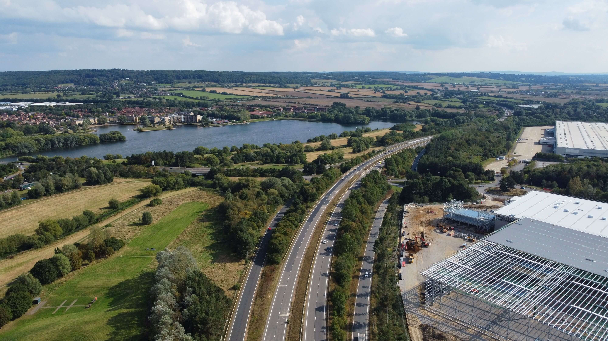

Infrastructure Asset Advisory is a specialist consultancy that builds robust decision-support tools from first principles. With over 14 years of subject matter expertise, we act as independent advisors and technical leads on national-scale modelling projects.
We cleanse and analyse vast historical datasets to produce reliable probability driven decisions, delivering CAPEX and OPEX forecasting capabilities for your future funding periods.
Translating complex datasets into actionable operational strategies.
We design and implement predictive asset degradation models to optimise long-term maintenance and renewal planning, ensuring maximum return on capital investment.
Comprehensive Reliability, Availability and Maintainability studies. We develop sophisticated RAM asset models to calculate MTBF and MTTR, directly informing CAPEX decisions.
We build bespoke software, algorithms, and data visualisation tools that process large datasets to output actionable performance metrics and objective asset rankings.
Delivering national-scale modelling for track, tunnels, and earthworks. We have built predictive degradation models ageing asset portfolios and developed award-winning instability algorithms.
Extensive production and operational availability studies for complex assets, including advanced RAM modelling for FPSOs, subsea tiebacks, and international LNG facilities.

Developing RAM models for major water treatment works, and utilising machine learning and geospatial data to develop proactive road safety tools identifying high-risk locations.
Discuss your infrastructure challenges directly with our technical lead.
Key projects and technical leadership delivered by our principal consultancy team.
Led the full design, validation, and implementation of a predictive asset degradation model for a 140-year-old tunnel portfolio, converting complex engineering heuristics into automated business rules for long-term CAPEX planning.
Technical Lead on production and operational availability studies for deepwater FPSOs, subsea tiebacks, and global LNG processing facilities, utilising operational maintenance data to optimize OPEX/CAPEX decisions.
Developed machine learning models to identify high-risk road casualty locations using driver telemetry data, and built comprehensive RAM availability models for major municipal water treatment works.
*Reflects technical leadership and project delivery completed by company principal consultants across current and prior engagements.